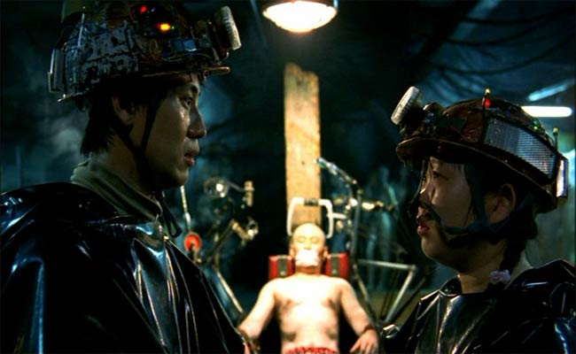
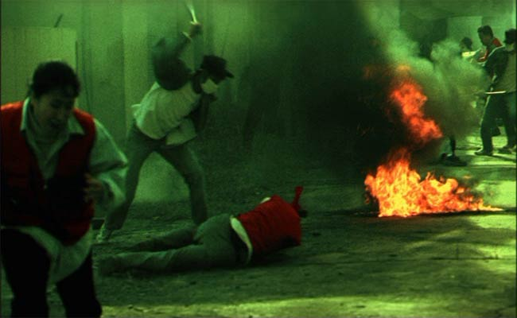
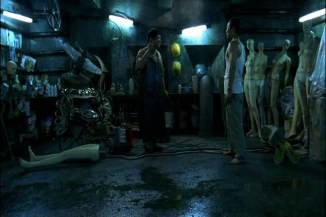

Movie review by : SFAM
Year : 2003
Directed by : Jun-hwan Jeong
Written by : Jun-hwan Jeong
Degree of Cyberpunk visuals : Very High
Correlation to Cyberpunk themes : Medium
Rating : 9/10
Key cast members :

Overview: Here's another movie that ranks really high on the weird shitometer scale - yet another cyberpunk movie from the tour-de-force of cyberpunk movies that Korea has become. Save the Green Planet is one of the only movies that has just about every movie genre represented. You'll find everything from Gilliam-like comedy to graphic horror, to action, to scifi-thriller here. And of course, we get a large dose of Japanese-like Cyberpunk torture visuals in this terrific Korean production.

The Story: Save the Green Planet is about a completely strange guy and his even wierder ballerina girlfriend - our antihero is convinced that a certain CEO is really an alien in disguise. He has determined its his job to root the alien out and kill him if necessary, just like all the other "potential" aliens he has found in the past. After capturing him, He cuts the CEO's hair off, as the aliens use hair follicles to communicate. He has other reasons for requiring foot torture and chest ironing. After all, good torture must always have a reason, right?
The Bottom Line: It's hard to go too much further into the plot for fear of giving key aspects of the movie away. Suffice to say the ending is terrific and fully open to interpretation, and actually has interesting similarities to the ending of Brazil. On top of this, Save the Green Planet is expertly shot, and wonderfully edited. The pacing is simply superb. It's really hard to imagine that this is Jun-hwan Jeong's first movie.

You gotta love the dolls everywhere. This guy makes them for his job.
Fair warning: Be warned though. This is a truly weird movie that his NOT for the squeemish at heart. While not a "true" Japanese cyberpunk movie in that, um, it's Korean, and doesn't totally take the "no boundaries" idea, it's pretty darn close, and certainly merits mention in that sub-genre of cyberpunk. So much so that if you find real Japanese cyberpunk movies to be too much for you (and BTW, Tetsuo 2 doesn't count, as this movie really doesn't break ground and isn't that good besides), Save the Green Planet is a decent entry to at least experience a similar pacing and mindset.